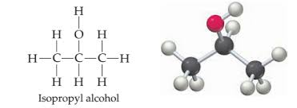

Isopropyl alcohol is compound with the chemical formula C3H8O. It is a colorless, flammable chemical compound with a strong odor. As an isopropyl group linked to a hydroxyl group, it is the simplest example of a secondary alcohol, where the alcohol carbon atom is attached to two other carbon atoms. It is a structural isomer of 1-propanol.
Isopropyl alcohol, also called 2-propanol, one of the most common members of the alcohol family of organic compounds. Isopropyl alcohol was the first commercial synthetic alcohol; chemists at the Standard Oil Company of New Jersey (later Exxon Mobil) first produced it in 1920 while studying petroleum by-products. It is easily synthesized from the reaction of propylene with sulfuric acid, followed by hydrolysis.
In some cases the hydration of propylene is carried out in one step, using water and a catalyst at high pressure. Isopropyl alcohol is mixed with water for use as a rubbing-alcohol antiseptic. It is also used in aftershave lotions, hand lotions, and other cosmetics. In industry it is used as an inexpensive solvent for cosmetics, drugs, shellacs, and gums, as well as for denaturing ethanol (ethyl alcohol). Added to wet gas, it helps to prevent separation and freezing of a water layer. Isopropyl alcohol is easily oxidized to acetone, another important solvent.
Isopropyl alcohol also manufactured in the United States by an indirect hydration technique in which a fraction containing 40–60% propylene that is isolated from refinery exhaust gases reacts with sulfuric acid (Lowenheim and Moran, 1975). In an older (strong-acid) process, 88–93% sulfuric acid reacted with propylene gas at 25–60°C for a long time. In a newer (weak-acid) process, which has replaced the strong¯ acid process, propylene gas is absorbed in 60% sulfuric acid at 85°C for a short reaction time (NIOSH, 1976). Estimated annual production capacity for 1981 was 2.8 million pounds (SRI, International, 1982).
